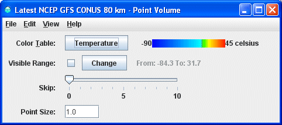

Overview
The Point Volume display shows the grid points in a volume of data as individual points in the display. The controls are used to change color tables, the number of points to skip, and the point size.

Image 1: Point Volume Controls Properties Dialog
Image 1: Point Volume Controls Properties Dialog
The transparency features of the color table can be adjusted to see through the display. This is done by right-clicking on the color bar, going down to Transparency, and selecting a percentage.
Properties
- Color Table - Shows the active color table and the associated high and low data values in the units of the display. As the mouse pointer is moved over the color bar, the value at a particular color is shown. Right click on the color bar or click on the button that displays the name of the Color Table to make modifications to the color bar. This allows for opening the Color Table Editor, changing the range, selecting other color tables, etc.
- Visible Range - Sets the range of data displayed. Clicking the
 button will allow for changing the range from the default values for the parameter. Clicking the checkbox next to Visible Range applies any modified range to the data being displayed in the Main Display window.
button will allow for changing the range from the default values for the parameter. Clicking the checkbox next to Visible Range applies any modified range to the data being displayed in the Main Display window. - Skip - Determines how many points to skip in the display. This helps to mitigate cluttering.
- Point Size - Sets the size of the data points in the Main Display window.
Menus
Many of the menu items seen utilizing this display are standard options that can be found in the Menus section of the Layer Controls page. However, there is one option that is unique to this display.
The View menu has this unique option:
- Use Data Projection - Re-centers the display and resets the zoom level back to the display's initial settings without changing any other preferences that have been modified.